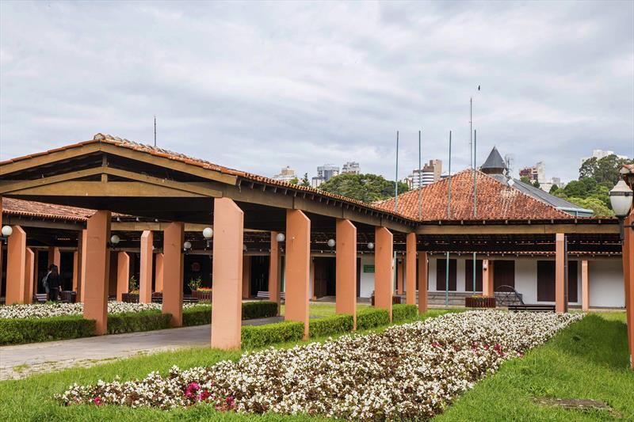
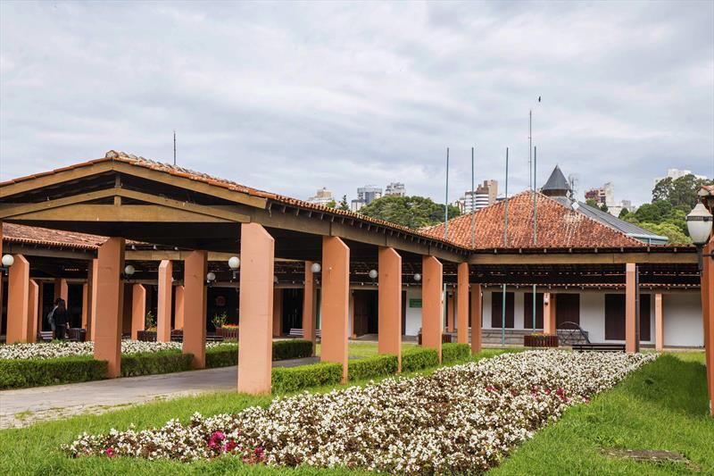

📅 Data e Horário
11 de Setembro de 2025
Das 13h às 18h
📍 Local
Salão de Atos do Parque Barigui
Curitiba - PR
 

🎤 Participação Confirmada
Palestra com Sr.ª Luciana Maísa da Silva Sydor
Coordenadora de Saúde Mental - SMS Curitiba